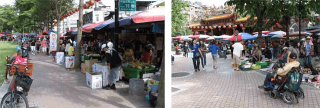
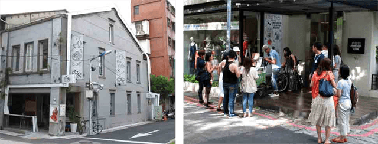
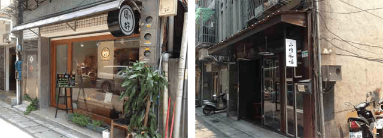
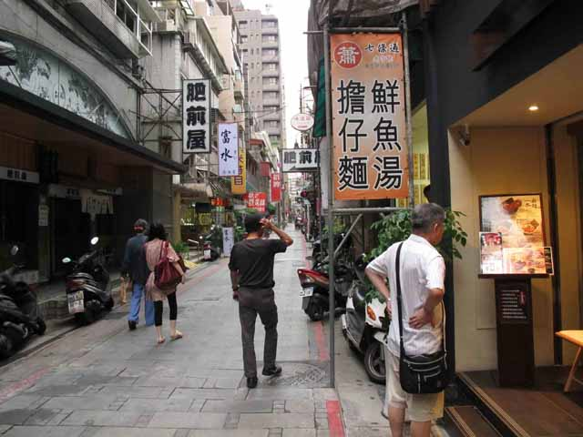
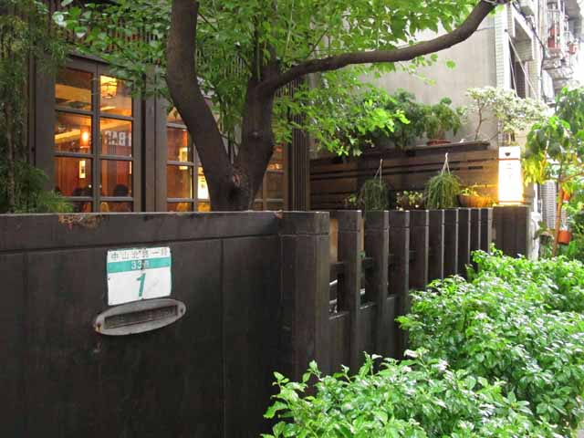

達人的旅遊新觀點


劉克襄從事自然觀察、歷史旅行與舊路探勘十餘年。曾出版詩集、散文、小說和自然旅行指南等著作三十餘部。並獲中國時報新詩推薦獎、台灣詩獎、吳三連獎、台灣自然保育獎等。

若要介紹中山北路前半段的風光，我會選擇雙連站、中山站和九條通展開一日小旅行。
雙連市場雖說只有短短三百公尺，可是麻雀雖小，五臟俱全。早上，我喜歡藉由它，做為探索台北傳統市場的平台。觀光遊客可沿著旁邊開闊的大道散步，彷彿經過畫廊，觀看一幅台北清明上河圖的卷軸。
平時一早市場便生氣勃勃，賣蔬果、賣小吃和賣衣飾的，一攤緊挨一攤，整條窄小巷弄常擠得車水馬龍。你可以選擇旁觀，不影響當地人生活，但亦可縱身而入，加入買賣吃食的行列。
一般台北市場都在十一點左右逐漸收攤。它卻有別於其它，因為周遭上班族買菜的人多，愈接近中午，反而愈加熱鬧。雙連傳統露天市場，除了常見的豐盛蔬果和平民衣物，還有來自不同山區和海邊的小農，按時節帶來新鮮的果物，讓我們感受台北在地風物的特色。
但多數遊客最在乎的，恐怕還是周遭有何小吃。一對知名的水餃店，分別為高記和三五水餃。兩家遊客必訪的湯圓，分別是市場內的燕山湯圓，以及不遠的雙連圓仔湯，各以鹼甜聲名遠播。阿國和阿城切仔麵也是人氣美食，據說是兄弟分家，分據錦州街和民生西路。
魯肉飯也是雙連最具代表性的特色。百年前雙連車站設站，許多貨物在此裝卸。勞動人力多，集聚成市，魯肉飯在此遂成為重要的小攤。目前最具代表性的三家分別為滿庭香、香滿園和雙連街。
下一站，中山捷運站商圈，最近成為港澳遊最愛走逛的地點。此站並無著名古蹟和夜市，更非繁華百貨購物公司，到底有何魅力呢？
小店文創的興起或許是最重要的特色。以輕食咖啡、髮廊設計和文創商品為主的店面，一間間各自創造了自己的風格。遊客到來主要便是為了見識此年輕次文化的魅力，感染個體戶文創的氣息。
輕食方面，米朗琪咖啡館無疑是最具代表性的店面，後來諸多活潑的複合式餐廳，都朝此一方向發展。文創方面，蘑菇和台灣好大概是最具指標性的店面。年輕族群想在城市實踐樂活內涵，不斷研發文創產品，展現在地美好風物，這裡絕對是線頭之一。
除此，還有鹿皮、剛好、時光、公雞咖啡、小器食堂等休閒餐飲店，以及店面不及二坪的Matt、旅人等，故事藏在店面的暗角幽落，等著旅人去發掘和撞見。
但最近有些文創店規模縮小了，相對地，精品商鋪擴充店面，飲食店增加更多。這裡面透露了鮮明的消費訊息，中山捷運站的物價相對要提高。這一趨勢會不會對多樣小店的生存有何影響，一時還難看出，但卻告知了小店文創的成熟在此似乎有一個階段性的完成。
九條通的範圍，主要在中山北路一段和林森路一帶。日治時期是日本移民者居住的環境，戰後成為日本商社上班族偏好集聚的環境。日後逐漸出現居酒屋、按摩店和卡拉OK等店面，也有各類日式料理和餐廳林立，形成特有的台北日式商圈。
目前以六七八九，四條通最為熱鬧，不僅日本遊客喜愛集聚，許多台灣人也喜歡走逛此地，體驗台式的日本餐飲文化特色。晚近一些新的日式餐廳，亦加入更多樣料理，新的麵食和壽司風味不斷衍生。條通文化其實一直創新，迎合年輕人的口味。
九條通在六七０年代，曾引領台北的繁華。晚近雖非重要商圈，但仍持續保有此一強烈的日式飲食文化特色，委實難得。只是巷弄多未見整治，未來很值得規劃為一個徒步商圈。
